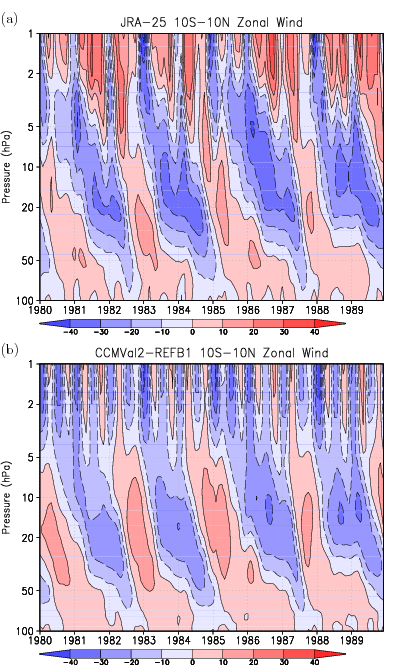
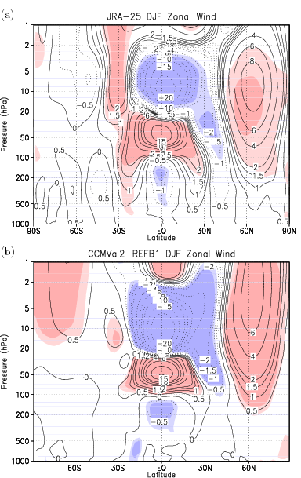
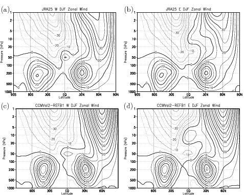
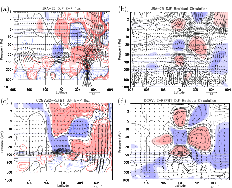
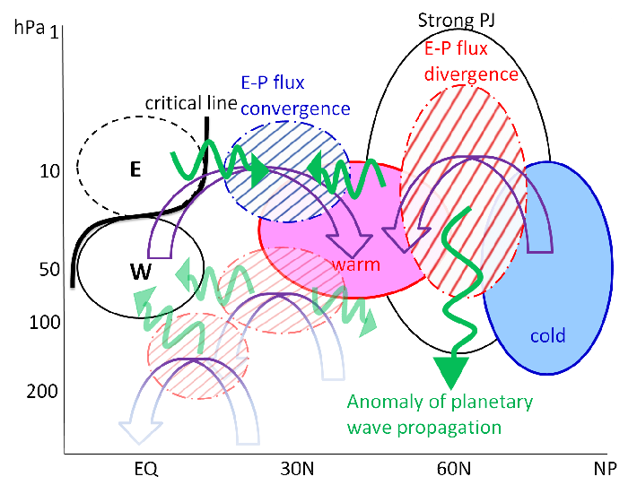

研究内容：成層圏QBOの北極渦への影響
赤道成層圏では長周期の変動として準二年周期振動 (quasi-biennial oscillation: QBO)が卓越し, 成層圏の100〜10 hPa付近の高度では約２年の周期で上空に西風と東風が交互に現れて下降する特徴を示します（図１）.
赤道域下部成層圏50 hPa付近の高度のQBOが西風か東風かと関連して, 冬季北半球の成層圏では, 北極周辺の強い西風で特徴づけられる極渦が強まったり弱まったりする傾向にあることが知られ, Holton-Tan effectと呼ばれています. またHolton-Tan effectには, 50 hPa付近の高度のQBOに伴う東西風が西風か東風かで定常惑星波のcritical line（伝播可能かどうかの境界に相当）の緯度が変わり, それが惑星波の伝播を変えて極域に影響するとされてきました. 近年, 上部成層圏までも含むようになった客観解析データの解析が行われ, また簡単化された数値モデルや化学気候モデル（Chemistry Climate Model: CCM）の結果の解析からも, 50 hPaよりも上空の赤道域東西風が極渦変動に関係していることが指摘されるようになりましたが, その具体的なプロセスを説明できるまでには至りませんでした.
Yamashita et al. [2011]では, これまで指摘されていた赤道下部成層圏50 hPa付近の高度のQBOに伴うプロセスのみならず, それより上空の10 hPa付近のQBOに伴うプロセスが成層圏の極渦変動にとって重要である可能性を, 東京大学気候システム研究センター／国立環境研究所（CCSR/NIES）CCMと客観解析データJRA-25を用いて解明しました.

図１: 客観解析データ（JRA-25）と中間圏界面付近（高度約80 km）までを含むCCSR/NIES CCMの近過去気候再現実験（初期値を変えて行った1960〜2006年までの３つの連続計算）の結果をもとに作成した, 赤道域の南緯10度〜北緯10度までの緯度帯で平均した東西風の時間ー高度断面図. 赤色が西風域, 青色が東風域を表わす. (Yamashita et al. [2011], Figure 1)
赤道50 hPaの東西風が西風か東風かでQBO西風相と東風相を定義し, 解析に用いた各年を西風相と東風相の年に分類してコンポジット解析を行いました. 西風相の年には北半球冬季の成層圏の極渦が強まり（北緯60度付近の西風偏差に対応）, 東風相の際には弱まる傾向がCCMの近過去気候再現実験とJRA-25データとの結果から解析されました（図２）.

図２: 赤道域50 hPa高度でQBOが西風相の場合のコンポジット平均と東風相の場合のコンポジット平均を示す. 実線が西風偏差, 破線が東風偏差. (a)JRA-25と(b) CCMの結果. 色は95%で有意な場所. (Yamashita et al. [2011], Figure 2)
赤道域では, 50 hPaで定義したQBOが西風相の際に10 hPa付近の高度では東風となる傾向にあります（図３a, c）. 逆に, 50 hPaが東風相の場合には10 hPa付近は西風となります（図３b, d）.

図３: (a, c) JRA-25とCCMによるQBO西風相の場合の東西風コンポジット. (b, d) 東風相の場合. (Yamashita et al. [2011], Figure 3)
このため50 hPaが西風相の場合, 10 hPa付近では北半球側に定常惑星波が伝播できない領域（東風領域）ができ, 北半球中高緯度から伝播してくる惑星波は, この高度の北緯30度付近で相対的に砕波/散逸しやすくなります（図４a, cの青線に対応）. E-P fluxの収束偏差があるとダウンワードコントロールにより子午面循環が変わり, 収束域より極側下層の中緯度成層圏では断熱加熱により高温偏差が形成され（図４b, dの実線に対応）, それが温度風の関係から北緯60度付近に形成されている西風偏差（図２）と対応します. 同時にこの西風偏差は, 中高緯度における波と平均流の相互作用による西風加速（図４a, cの赤線に対応）と整合的になっていることが分かりました.

図４: (a, c) JRA-25とCCMによるE-P flux偏差（矢印）の分布. 赤線はE-P fluxの発散偏差（惑星波が相対的に砕波/散逸しにくい場所）で青線は収束偏差（砕波/散逸しやすい場所）を表わす. (b, d) 矢印は循環偏差で実線が高温偏差, 破線が低温偏差. 色は95%で有意な場所. (Yamashita et al. [2011], Figure 4)
これによって, 図５の模式図で示したような赤道10 hPa付近の東西風のcritical lineと北緯60度付近の西風偏差との関係を, CCMと観測の両方から説明することができました.

図５: QBOが成層圏の極渦変動に影響するプロセスを示した模式図. 細黒線が東西風で太黒線がcritical line. 赤と青で塗られた領域は高温偏差と低温偏差. 緑の矢印は惑星波が相対的にどちらに伝播しやすいかで, 赤と青のハッチは相対的に砕波/散逸しにくい場所としやすい場所を表わす. 紫の矢印は循環偏差. 低緯度域にある薄色の偏差は, その場所に影響しても極域への影響は明確ではないもの. (Yamashita et al. [2011], Figure 5)
赤道域下部成層圏50 hPa付近の高度のQBOが西風か東風かと関連して, 冬季北半球の成層圏では, 北極周辺の強い西風で特徴づけられる極渦が強まったり弱まったりする傾向にあることが知られ, Holton-Tan effectと呼ばれています. またHolton-Tan effectには, 50 hPa付近の高度のQBOに伴う東西風が西風か東風かで定常惑星波のcritical line（伝播可能かどうかの境界に相当）の緯度が変わり, それが惑星波の伝播を変えて極域に影響するとされてきました. 近年, 上部成層圏までも含むようになった客観解析データの解析が行われ, また簡単化された数値モデルや化学気候モデル（Chemistry Climate Model: CCM）の結果の解析からも, 50 hPaよりも上空の赤道域東西風が極渦変動に関係していることが指摘されるようになりましたが, その具体的なプロセスを説明できるまでには至りませんでした.
Yamashita et al. [2011]では, これまで指摘されていた赤道下部成層圏50 hPa付近の高度のQBOに伴うプロセスのみならず, それより上空の10 hPa付近のQBOに伴うプロセスが成層圏の極渦変動にとって重要である可能性を, 東京大学気候システム研究センター／国立環境研究所（CCSR/NIES）CCMと客観解析データJRA-25を用いて解明しました.
赤道50 hPaの東西風が西風か東風かでQBO西風相と東風相を定義し, 解析に用いた各年を西風相と東風相の年に分類してコンポジット解析を行いました. 西風相の年には北半球冬季の成層圏の極渦が強まり（北緯60度付近の西風偏差に対応）, 東風相の際には弱まる傾向がCCMの近過去気候再現実験とJRA-25データとの結果から解析されました（図２）.
赤道域では, 50 hPaで定義したQBOが西風相の際に10 hPa付近の高度では東風となる傾向にあります（図３a, c）. 逆に, 50 hPaが東風相の場合には10 hPa付近は西風となります（図３b, d）.
このため50 hPaが西風相の場合, 10 hPa付近では北半球側に定常惑星波が伝播できない領域（東風領域）ができ, 北半球中高緯度から伝播してくる惑星波は, この高度の北緯30度付近で相対的に砕波/散逸しやすくなります（図４a, cの青線に対応）. E-P fluxの収束偏差があるとダウンワードコントロールにより子午面循環が変わり, 収束域より極側下層の中緯度成層圏では断熱加熱により高温偏差が形成され（図４b, dの実線に対応）, それが温度風の関係から北緯60度付近に形成されている西風偏差（図２）と対応します. 同時にこの西風偏差は, 中高緯度における波と平均流の相互作用による西風加速（図４a, cの赤線に対応）と整合的になっていることが分かりました.
これによって, 図５の模式図で示したような赤道10 hPa付近の東西風のcritical lineと北緯60度付近の西風偏差との関係を, CCMと観測の両方から説明することができました.
- Yamashita, Y., H. Akiyoshi, and M. Takahashi (2011): Dynamical response in the Northern Hemisphere midlatitude and high-latitude winter to the QBO simulated by CCSR/NIES CCM, J. Geophys. Res., 116, D06118, doi:10.1029/2010JD015016.
[top]